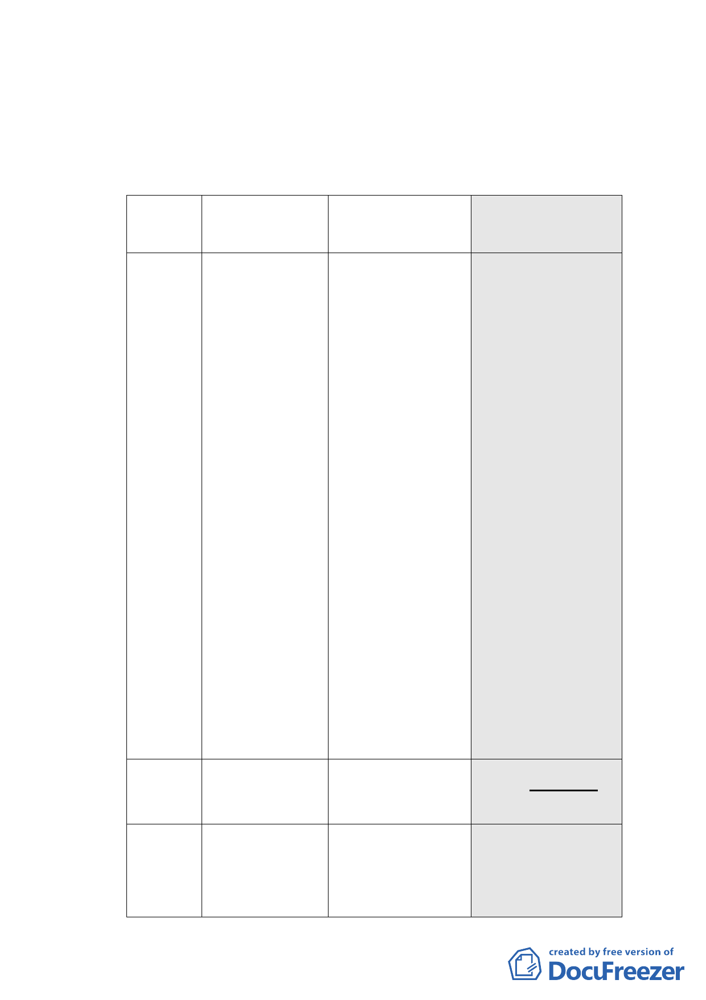

畫修訂案。
三、審議歷程：本案業經召開 3 次專案小組進行討論，市府發展
局業於 99 年 6 月 17 日以北市都規字第 09934418000 號函送
申請單位修正後資料到會。
四、計畫內容重點概述：
項目
現行計畫
（92.1.7）
公展計畫
（98.12.22）
本次修正內容
（99.6.17）
土地
及建
物使
用項
目
作指定之使用項
目應達容積樓地
板 面 積 1/2 以
上，其餘除不准
作住宅外比照商
三使用。
●建築物低層部(地
面層第 1 至第 3
層)應作指定之使
用項目，其餘比照
商三規定，住宅使
用之容積樓地板
面積不得超過申
請基地容積樓地
板面積（不含臺北
好好看獎勵容積）
之 1/2 以上。建築
物非供住宅使用
之樓層，其同層及
以下各樓層應均
非供住宅使用。
●依 92 年計畫規定。
●申請臺北好好看容
積獎勵部分比照商
三，亦不得作住
宅，且不得計入前
項使用容積樓地板
面積之計算。
●申請臺北好好看
之獎勵容積樓地
板面積應作商三
使用項目（不准許
作住宅使用），且
不得計入前項使
用容積樓地板面
積之計算。
建蔽
率
容積
放寬
60％
增訂不得低於 40%
增訂不得低於 40%
依本計畫及其他 ●不適用基地合併獎勵規 ●不適用基地合併獎勵規
規定得增加容積 定。
定。
者，其增加容積 ●依本計畫及其他規定得 ●依本計畫及其他規定得
之總和不得超過 增加容積者，其增加容 增加容積者，其增加容積
- 31 -